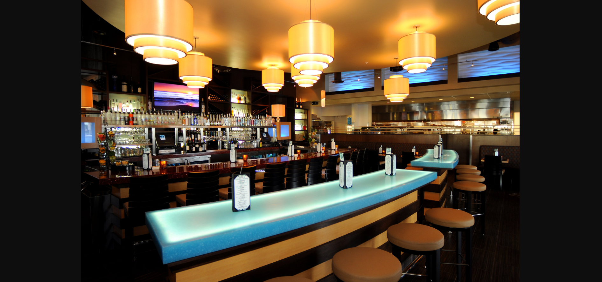

Café harmony specialises in providing various food staff to all age groups. it has grown rapidly and now faces the challenge of improving its overall operational efficiency and customer experience.
I completed its sales trend Analysis using sales Data, Customer data, employee Data and stock data and revealed business patterns and optimization opportunities.This analysis was done using Microsoft Excel

NovaMed Solutions is a pharmaceutical company focused on developing, manufacturing, and
distributing a wide range of prescription and over-the-counter drugs. The company’s core operations
span across North America, Europe, and parts of the Asia-Pacific region.In response to increasing competition and evolving market demands, I have implemented a
performance analytics initiative to monitor sales trends, profitability, and customer behavior. This
analysis provides visibility into high-performing products, underperforming segments, and
opportunities for margin optimization. This analysis was done using Power BI
Choco de Luxe is a premium artisanal chocolate brand headquartered in Brussels, Belgium, with operations
across several European cities. The company distributes its chocolate bars, bites, and confections through
multiple channels; retail outlets, online platforms, and supermarkets. With a growing product line and
expanding footprint across Europe, they aim to maintain high-quality standards while increasing market share,
and adapting its product and sales strategy based on regional performance and customer preferences. The
company is facing challenge of unified, data-driven view of how its products, salespeople, and delivery
strategies are performing across Europe. Therefore, there is need to analyze Choco de Luxe’s sales
performance across various locations, sales channels, and product lines, Identifying patterns, inefficiencies,
workforce and growth opportunities to help the Business make informed decisions on product positioning and
channel strategy through interactive dashboard.I used Tableua for this analysis